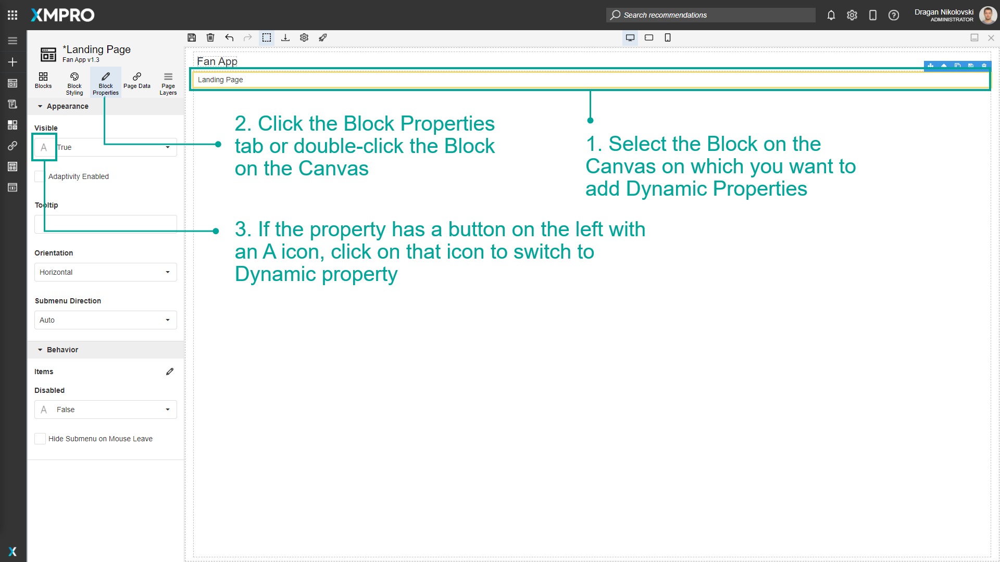
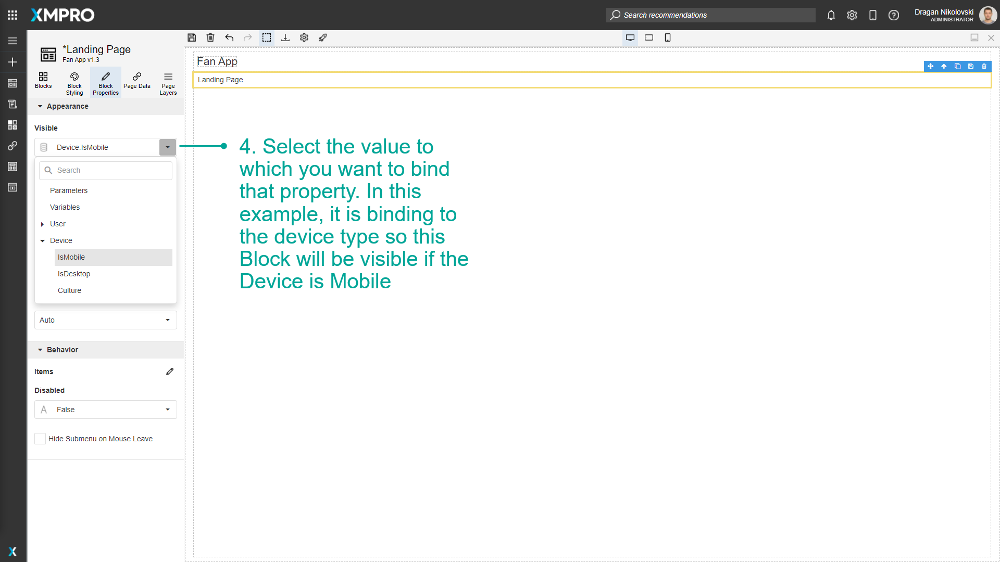

Use Dynamic Properties
Dynamic Properties allow you to select a dynamic value for a property from the Page Parameters, Variables, User Details, and from a column or expression of the current row of a parent Block's Data Source.
Note
It is recommended that you read the article listed below to improve your understanding of Properties.
How to Enable Dynamic Properties
To enable Dynamic Properties, follow the steps below:
- Select the Block on the Canvas on which you want to add Dynamic Properties.
- Click the Block Properties tab or double-click the Block on the Canvas.
- If the property has a button on the left with an A icon, click on that icon to switch to Dynamic Property.
- Select the value to which you want to bind that property. In this example, it is binding to the device type so this Block will be visible if the Device is Mobile.


Last modified: May 28, 2025